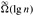

|
|
< Day Day Up > |
|
In this section, we show how to perform operations on binomial heaps in the time bounds shown in Figure 19.1. We shall only show the upper bounds; the lower bounds are left as Exercise 19.2-10.
To make an empty binomial heap, the MAKE-BINOMIAL-HEAP procedure simply allocates and returns an object H , where head[H ] = NIL. The running time is Θ(1).
The procedure BINOMIAL-HEAP-MINIMUM returns a pointer to the node with the minimum key in an n-node binomial heap H. This implementation assumes that there are no keys with value ∞. (See Exercise 19.2-5.)
BINOMIAL-HEAP-MINIMUM(H) 1 y ← NIL 2 x ← head[H] 3 min ← ∞ 4 while x ≠ NIL 5 do if key[x] < min 6 then min ← key[x] 7 y ← x 8 x ← sibling[x] 9 return y
Since a binomial heap is min-heap-ordered, the minimum key must reside in a root node. The BINOMIAL-HEAP-MINIMUM procedure checks all roots, which number at most⌊lg n⌋ + 1, saving the current minimum in min and a pointer to the current minimum in y. When called on the binomial heap of Figure 19.3, BINOMIAL-HEAP-MINIMUM returns a pointer to the node with key 1.
Because there are at most ⌊lg n⌋ + 1 roots to check, the running time of BINOMIAL-HEAP-MINIMUM is O(lg n).
The operation of uniting two binomial heaps is used as a subroutine by most of the remaining operations. The BINOMIAL-HEAP-UNION procedure repeatedly links binomial trees whose roots have the same degree. The following procedure links the Bk-1 tree rooted at node y to the Bk-1 tree rooted at node z; that is, it makes z the parent of y. Node z thus becomes the root of a Bk tree.
BINOMIAL-LINK(y, z) 1 p[y] ← z 2 sibling[y] ← child[z] 3 child[z] ← y 4 degree[z] ← degree[z] + 1
The BINOMIAL-LINK procedure makes node y the new head of the linked list of node z's children in O(1) time. It works because the left-child, right-sibling representation of each binomial tree matches the ordering property of the tree: in a Bk tree, the leftmost child of the root is the root of a Bk-1 tree.
The following procedure unites binomial heaps H1 and H2, returning the resulting heap. It destroys the representations of H1 and H2 in the process. Besides BINOMIAL-LINK, the procedure uses an auxiliary procedure BINOMIAL-HEAP-MERGE that merges the root lists of H1 and H2 into a single linked list that is sorted by degree into monotonically increasing order. The BINOMIAL-HEAP-MERGE procedure, whose pseudocode we leave as Exercise 19.2-1, is similar to the MERGE procedure in Section 2.3.1.
BINOMIAL-HEAP-UNION(H1, H2) 1 H ← MAKE-BINOMIAL-HEAP() 2 head[H] ← BINOMIAL-HEAP-MERGE(H1, H2) 3 free the objects H1 and H2 but not the lists they point to 4 if head[H] = NIL 5 then return H 6 prev-x ← NIL 7 x ← head[H] 8 next-x ← sibling[x] 9 while next-x ≠ NIL 10 do if (degree[x] ≠ degree[next-x]) or (sibling[next-x] ≠ NIL and degree[sibling[next-x]] = degree[x]) 11 then prev-x ← x ▹ Cases 1 and 2 12 x ← next-x ▹ Cases 1 and 2 13 else if key[x] ≤ key[next-x] 14 then sibling[x] ← sibling[next-x] ▹ Case 3 15 BINOMIAL-LINK(next-x, x) ▹ Case 3 16 else if prev-x = NIL ▹ Case 4 17 then head[H] ← next-x ▹ Case 4 18 else sibling[prev-x] ← next-x ▹ Case 4 19 BINOMIAL-LINK(x, next-x) ▹ Case 4 20 x ← next-x ▹ Case 4 21 next-x ← sibling[x] 22 return H
Figure 19.5 shows an example of BINOMIAL-HEAP-UNION in which all four cases given in the pseudocode occur.
The BINOMIAL-HEAP-UNION procedure has two phases. The first phase, performed by the call of BINOMIAL-HEAP-MERGE, merges the root lists of binomial heaps H1 and H2 into a single linked list H that is sorted by degree into monotonically increasing order. There might be as many as two roots (but no more) of each degree, however, so the second phase links roots of equal degree until at most one root remains of each degree. Because the linked list H is sorted by degree, we can perform all the link operations quickly.
In detail, the procedure works as follows. Lines 1-3 start by merging the root lists of binomial heaps H1 and H2 into a single root list H . The root lists of H1 and H2 are sorted by strictly increasing degree, and BINOMIAL-HEAP-MERGE returns a root list H that is sorted by monotonically increasing degree. If the root lists of H1 and H2 have m roots altogether, BINOMIAL-HEAP-MERGE runs in O(m) time by repeatedly examining the roots at the heads of the two root lists and appending the root with the lower degree to the output root list, removing it from its input root list in the process.
The BINOMIAL-HEAP-UNION procedure next initializes some pointers into the root list of H . First, it simply returns in lines 4-5 if it happens to be uniting two empty binomial heaps. From line 6 on, therefore, we know that H has at least one root. Throughout the procedure, we maintain three pointers into the root list:
x points to the root currently being examined,
prev-x points to the root preceding x on the root list: sibling[prev-x] = x (since initially x has no predecessor, we start with prev-x set to NIL), and
next-x points to the root following x on the root list: sibling[x] = next-x.
Initially, there are at most two roots on the root list H of a given degree: because H1 and H2 were binomial heaps, they each had at most one root of a given degree. Moreover, BINOMIAL-HEAP-MERGE guarantees us that if two roots in H have the same degree, they are adjacent in the root list.
In fact, during the execution of BINOMIAL-HEAP-UNION, there may be three roots of a given degree appearing on the root list H at some time. We shall see in a moment how this situation could occur. At each iteration of the while loop of lines 9-21, therefore, we decide whether to link x and next-x based on their degrees and possibly the degree of sibling[next-x]. An invariant of the loop is that each time we start the body of the loop, both x and next-x are non-NIL. (See Exercise 19.2-4 for a precise loop invariant.)
Case 1, shown in Figure 19.6(a), occurs when degree[x] ≠ degree[next-x], that is, when x is the root of a Bk-tree and next-x is the root of a Bl-tree for some l > k. Lines 11-12 handle this case. We don't link x and next-x, so we simply march the pointers one position farther down the list. Updating next-x to point to the node following the new node x is handled in line 21, which is common to every case.
Case 2, shown in Figure 19.6(b), occurs when x is the first of three roots of equal degree, that is, when
degree[x] = degree[next-x] = degree[sibling[next-x]].
We handle this case in the same manner as case 1: we just march the pointers one position farther down the list. The next iteration will execute either case 3 or case 4 to combine the second and third of the three equal-degree roots. Line 10 tests for both cases 1 and 2, and lines 11-12 handle both cases.
Cases 3 and 4 occur when x is the first of two roots of equal degree, that is, when
degree[x] = degree[next-x] ≠ degree[sibling[next-x]].
These cases may occur in any iteration, but one of them always occurs immediately following case 2. In cases 3 and 4, we link x and next-x. The two cases are distinguished by whether x or next-x has the smaller key, which determines the node that will be the root after the two are linked.
In case 3, shown in Figure 19.6(c), key[x] ≤ key[next-x], so next-x is linked to x. Line 14 removes next-x from the root list, and line 15 makes next-x the leftmost child of x.
In case 4, shown in Figure 19.6(d), next-x has the smaller key, so x is linked to next-x. Lines 16-18 remove x from the root list; there are two cases depending on whether x is the first root on the list (line 17) or is not (line 18). Line 19 then makes x the leftmost child of next-x, and line 20 updates x for the next iteration.
Following either case 3 or case 4, the setup for the next iteration of the while loop is the same. We have just linked two Bk-trees to form a Bk+1-tree, which x now points to. There were already zero, one, or two other Bk+1-trees on the root list resulting from BINOMIAL-HEAP-MERGE, so x is now the first of either one, two, or three Bk+1-trees on the root list. If x is the only one, then we enter case 1 in the next iteration: degree[x] ≠ degree[next-x]. If x is the first of two, then we enter either case 3 or case 4 in the next iteration. It is when x is the first of three that we enter case 2 in the next iteration.
The running time of BINOMIAL-HEAP-UNION is O(lg n), where n is the total number of nodes in binomial heaps H1 and H2. We can see this as follows. Let H1 contain n1 nodes and H2 contain n2 nodes, so that n = n1 + n2. Then H1 contains at most ⌊lg n1⌋+1 roots and H2 contains at most ⌊lg n2⌋+1 roots, and so H contains at most ⌊lg n1⌋+⌊lg n2⌋+2 ≤ 2⌊lg n⌋+2 = O(lg n) roots immediately after the call of BINOMIAL-HEAP-MERGE. The time to perform BINOMIAL-HEAP-MERGE is thus O(lg n). Each iteration of the while loop takes O(1) time, and there are at most ⌊lg n1⌋ + ⌊lgn2⌋ + 2 iterations because each iteration either advances the pointers one position down the root list of H or removes a root from the root list. The total time is thus O(lg n).
The following procedure inserts node x into binomial heap H , assuming that x has already been allocated and key[x] has already been filled in.
BINOMIAL-HEAP-INSERT(H, x) 1 H′ ← MAKE-BINOMIAL-HEAP() 2 p[x] ← NIL 3 child[x] ← NIL 4 sibling[x] ← NIL 5 degree[x] ← 0 6 head[H′] ← x 7 H ← BINOMIAL-HEAP-UNION(H, H′)
The procedure simply makes a one-node binomial heap H′ in O(1) time and unites it with the n-node binomial heap H in O(lg n) time. The call to BINOMIAL-HEAP-UNION takes care of freeing the temporary binomial heap H′. (A direct implementation that does not call BINOMIAL-HEAP-UNION is given as Exercise 19.2-8.)
The following procedure extracts the node with the minimum key from binomial heap H and returns a pointer to the extracted node.
BINOMIAL-HEAP-EXTRACT-MIN(H)
1 find the root x with the minimum key in the root list of H,
and remove x from the root list of H
2 H′ ← MAKE-BINOMIAL-HEAP()
3 reverse the order of the linked list of x's children,
and set head[H′] to point to the head of the resulting list
4 H ← BINOMIAL-HEAP-UNION(H, H′)
5 return x
This procedure works as shown in Figure 19.7. The input binomial heap H is shown in Figure 19.7(a). Figure 19.7(b) shows the situation after line 1: the root x with the minimum key has been removed from the root list of H . If x is the root of a Bk-tree, then by property 4 of Lemma 19.1, x's children, from left to right, are roots of Bk-1-, Bk-2-, ..., B0-trees. Figure 19.7(c) shows that by reversing the list of x's children in line 3, we have a binomial heap H′ that contains every node in x's tree except for x itself. Because x's tree was removed from H in line 1, the binomial heap that results from uniting H and H′ in line 4, shown in Figure 19.7(d), contains all the nodes originally in H except for x. Finally, line 5 returns x.
Since each of lines 1-4 takes O(lg n) time if H has n nodes, BINOMIAL-HEAP-EXTRACT-MIN runs in O(lg n) time.
The following procedure decreases the key of a node x in a binomial heap H to a new value k. It signals an error if k is greater than x's current key.
BINOMIAL-HEAP-DECREASE-KEY(H, x, k) 1 if k > key[x] 2 then error "new key is greater than current key" 3 key[x] ← k 4 y ← x 5 z ← p[y] 6 while z ≠ NIL and key[y] < key[z] 7 do exchange key[y] ↔ key[z] 8 ▸ If y and z have satellite fields, exchange them, too. 9 y ← z 10 z ← p[y]
As shown in Figure 19.8, this procedure decreases a key in the same manner as in a binary min-heap: by "bubbling up" the key in the heap. After ensuring that the new key is in fact no greater than the current key and then assigning the new key to x, the procedure goes up the tree, with y initially pointing to node x. In each iteration of the while loop of lines 6-10, key[y] is checked against the key of y's parent z. If y is the root or key[y] ≥ key[z], the binomial tree is now min-heap-ordered. Otherwise, node y violates min-heap ordering, and so its key is exchanged with the key of its parent z, along with any other satellite information. The procedure then sets y to z, going up one level in the tree, and continues with the next iteration.
The BINOMIAL-HEAP-DECREASE-KEY procedure takes O(lg n) time. By property 2 of Lemma 19.1, the maximum depth of x is ⌊lg n⌋, so the while loop of lines 6-10 iterates at most ⌊lg n⌋ times.
It is easy to delete a node x's key and satellite information from binomial heap H in O(lg n) time. The following implementation assumes that no node currently in the binomial heap has a key of -∞.
BINOMIAL-HEAP-DELETE(H, x)
1 BINOMIAL-HEAP-DECREASE-KEY(H, x, -∞)
2 BINOMIAL-HEAP-EXTRACT-MIN(H)
The BINOMIAL-HEAP-DELETE procedure makes node x have the unique minimum key in the entire binomial heap by giving it a key of -∞. (Exercise 19.2-6 deals with the situation in which -∞ cannot appear as a key, even temporarily.) It then bubbles this key and the associated satellite information up to a root by calling BINOMIAL-HEAP-DECREASE-KEY. This root is then removed from H by a call of BINOMIAL-HEAP-EXTRACT-MIN.
The BINOMIAL-HEAP-DELETE procedure takes O(lg n) time.
Show the binomial heap that results when a node with key 24 is inserted into the binomial heap shown in Figure 19.7(d).
Show the binomial heap that results when the node with key 28 is deleted from the binomial heap shown in Figure 19.8(c).
Argue the correctness of BINOMIAL-HEAP-UNION using the following loop invariant:
At the start of each iteration of the while loop of lines 9-21, x points to a root that is one of the following:
the only root of its degree,
the first of the only two roots of its degree, or
the first or second of the only three roots of its degree.
Moreover, all roots preceding x's predecessor on the root list have unique degrees on the root list, and if x's predecessor has a degree different from that of x, its degree on the root list is unique, too. Finally, node degrees monotonically increase as we traverse the root list.
Explain why the BINOMIAL-HEAP-MINIMUM procedure might not work correctly if keys can have the value ∞. Rewrite the pseudocode to make it work correctly in such cases.
Suppose there is no way to represent the key -∞. Rewrite the BINOMIAL-HEAP-DELETE procedure to work correctly in this situation. It should still take O(lg n) time.
Discuss the relationship between inserting into a binomial heap and incrementing a binary number and the relationship between uniting two binomial heaps and adding two binary numbers.
In light of Exercise 19.2-7, rewrite BINOMIAL-HEAP-INSERT to insert a node directly into a binomial heap without calling BINOMIAL-HEAP-UNION.
Show that if root lists are kept in strictly decreasing order by degree (instead of strictly increasing order), each of the binomial heap operations can be implemented without changing its asymptotic running time.
Find inputs that cause BINOMIAL-HEAP-EXTRACT-MIN, BINOMIAL-HEAP-DECREASE-KEY, and BINOMIAL-HEAP-DELETE to run in Ω(lg n) time. Explain why the worst-case running times of BINOMIAL-HEAP-INSERT, BINOMIAL-HEAP-MINIMUM, and BINOMIAL-HEAP-UNION are  but not Ω(lg n). (See Problem 3-5.)
Chapter 18 introduced the 2-3-4 tree, in which every internal node (other than possibly the root) has two, three, or four children and all leaves have the same depth. In this problem, we shall implement 2-3-4 heaps, which support the mergeable-heap operations.
The 2-3-4 heaps differ from 2-3-4 trees in the following ways. In 2-3-4 heaps, only leaves store keys, and each leaf x stores exactly one key in the field key[x]. There is no particular ordering of the keys in the leaves; that is, from left to right, the keys may be in any order. Each internal node x contains a value small[x] that is equal to the smallest key stored in any leaf in the subtree rooted at x. The root r contains a field height[r] that is the height of the tree. Finally, 2-3-4 heaps are intended to be kept in main memory, so that disk reads and writes are not needed.
Implement the following 2-3-4 heap operations. Each of the operations in parts (a)-(e) should run in O(lg n) time on a 2-3-4 heap with n elements. The UNION operation in part (f) should run in O(lg n) time, where n is the number of elements in the two input heaps.
MINIMUM, which returns a pointer to the leaf with the smallest key.
DECREASE-KEY, which decreases the key of a given leaf x to a given value k ≤ key[x].
INSERT, which inserts leaf x with key k.
DELETE, which deletes a given leaf x.
EXTRACT-MIN, which extracts the leaf with the smallest key.
UNION, which unites two 2-3-4 heaps, returning a single 2-3-4 heap and de-stroying the input heaps.
Chapter 23 presents two algorithms to solve the problem of finding a minimum spanning tree of an undirected graph. Here, we shall see how binomial heaps can be used to devise a different minimum-spanning-tree algorithm.
We are given a connected, undirected graph G = (V, E) with a weight function w : E → R. We call w(u, v) the weight of edge (u, v). We wish to find a minimum spanning tree for G: an acyclic subset T ⊆ E that connects all the vertices in V and whose total weight
is minimized.
The following pseudocode, which can be proven correct using techniques from Section 23.1, constructs a minimum spanning tree T . It maintains a partition {Vi} of the vertices of V and, with each set Vi, a set
Ei ⊆ (u, v): u ∈ Vi or v ∈ Vi}
of edges incident on vertices in VI.
MST(G) 1 T ← Ø 2 for each vertex vi ∈ V[G] 3 do Vi ← {vi} 4 Ei ← {(vi, v) ∈ E[G]} 5 while there is more than one set Vi 6 do choose any set Vi 7 extract the minimum-weight edge (u, v) from Ei 8 assume without loss of generality that u ∈ Vi and v ∈ Vj 9 if i ≠ j 10 then T ← T ∪ {(u, v)} 11 Vi ← Vi ∪ Vj, destroying Vj 12 Ei ← Ei ∪ Ej
Describe how to implement this algorithm using binomial heaps to manage the vertex and edge sets. Do you need to change the representation of a binomial heap? Do you need to add operations beyond the mergeable-heap operations given in Figure 19.1? Give the running time of your implementation.
|
|
< Day Day Up > |
|